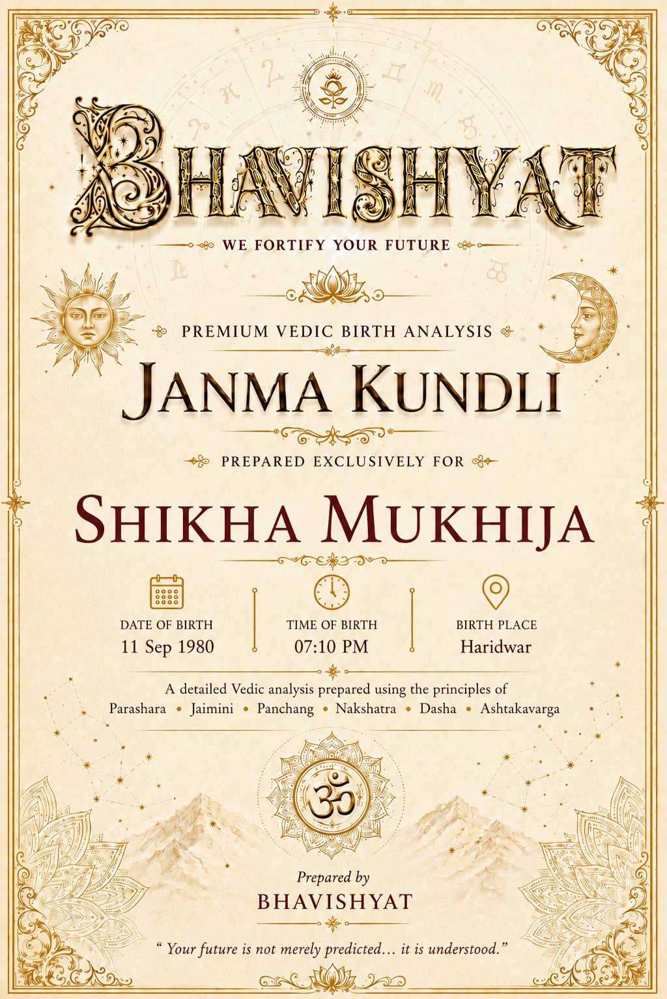
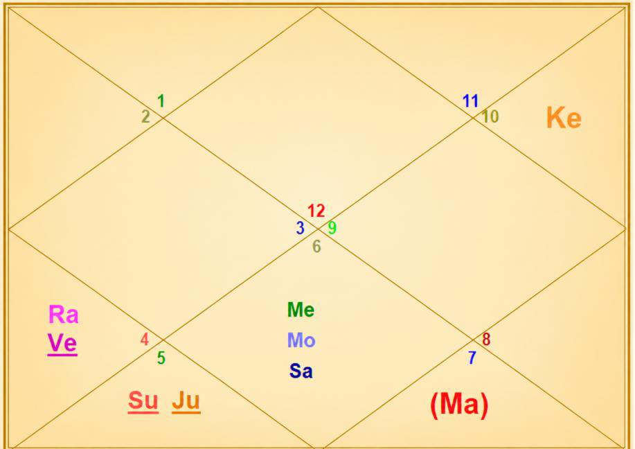

Janma Kundli • Shikha Mukhija
Birth Details & Panchang
| Name | Shikha Mukhija | Paksha | Shukla |
| Date of Birth | 11 September 1980 | Tithi | Dwitiya (2) |
| Time of Birth | 07:10 PM | Nakshatra | Hasta |
| Birth Place | Haridwar | Vaar | Thursday |
| Longitude | 78°09' E | Yoga | Shukla |
| Latitude | 29°56' N | Karan | Kaulava |
| Ascendant | Pisces | Asc Lord | Jupiter |
| Tithi Lord | Moon | Tithi Deity | Brahma |
| Nakshatra Lord | Moon | Nakshatra Deity | Savitri / Surya |
| Yoga Deity | Parvati | Karan Deity | Yama |
| Yogi | Moon | Duplicate Yogi | Venus |
| Abhiyogi | Mercury | Dagdha Rashi | Sagittarius (9), Pisces (12) |
Natal Chart (Rashi)

| Planet Distribution | Invisible half — lower half (beginning of life more eventful) | ||
| Ascendant | Pisces (Meena) | Moon / Sun Sign | Virgo (Kanya) / Leo (Simha) |
| Malefic | Venus (Shukra), Sun (Surya), Saturn (Shani) | Shunya Nakshatra | Shatabhisha, Revati |
| Maraka | Mercury (Budha), Mars (Mangal) | Dasha Balance | 3Y 3M 17D |
| Badhaka | Mercury (Budha) | Mangalik | Cancelled |
| Birth Dasha | Mo-Me-Ra (1-6-3) | ||
Janma Kundli • Shikha Mukhija
Favourable Influences
| Benefic Years | 18, 20, 25, 27, 29, 34, 36, 38 | ||
| Favourable Days | Monday, Tuesday, Thursday | ||
| Favourable Planets | Moon, Mars, Jupiter | ||
| Unfavourable Planets | Mercury, Saturn | ||
| Favourable Signs | Gemini, Scorpio, Capricorn, Pisces | ||
| Favourable Ratna | Yellow Sapphire, Pearl | Favourable UpRatna | Yellow Topaz, Moonstone |
| Lucky Ratna | Coral | Favourable Deity | Jagdamba |
| Favourable Metal | Bronze | Favourable Colour | Yellow |
| Direction | North-East | Favourable Cereals | Gram |
| Favourable Plant | Ashoka Tree / Palash | ||
| Favourable Temple | Somnath Temple | ||
Planets in Rashi Chart
| Planet | Lordship | Sign | Nakshatra | Nak. Lord | Nak. Count | Nav Tara | Char Karak |
|---|---|---|---|---|---|---|---|
| Sun | 6L | Leo (5) | Purva Phalguni | Venus | 26 N | 9 | Amatyakarak |
| Moon | 5L | Virgo (6) | Hasta | Moon | 1 N | 1 | Bhratrikaraka (3H) |
| Mars | 2L, 9L | Libra (7) | Swati | Rahu | 3 N | 2 | Matrikarak (4H) |
| Mercury | 4L, 7L | Virgo (6) | Uttara Phalguni | Sun | 27 N | 6 | Gnatikarak (6H) |
| Jupiter | 10L, 1L | Leo (5) | Uttara Phalguni | Sun | 27 N | 4 | Atmakarak (Life) |
| Venus | 3L, 8L | Cancer (4) | Pushya | Saturn | 23 N | 8 | Putrakarak (5H) |
| Saturn | 11L, 12L | Virgo (6) | Uttara Phalguni | Sun | 27 N | 5 | DaraKarak (7H) |
| Rahu | — | Cancer (4) | Ashlesha | Mercury | 24 N | 3 | — |
| Ketu | — | Capricorn (10) | Dhanishtha | Mars | 11 N | 7 | — |
| Debilitated Planet(s) | — | Combust Planet(s) | Mercury, Jupiter, Saturn |
| Retrograde Planet(s) | — | ||
Sarvastakvarga & Houses
| Very Strong (35+) | 4H | ||
| Strong (31-35) | 3H, 5H, 11H | ||
| Above Average (28-30) | 9H | ||
| Below Average (24-27) | 1H, 6H, 10H, 12H | ||
| Weak (21-23) | 2H | ||
| Very Weak (<21) | 7H, 8H | ||
Janma Kundli • Shikha Mukhija
Houses in Rashi Chart
| House | Sign | Planets | SAV | Lords | Aspect |
|---|---|---|---|---|---|
| 1H | Pisces (12) | — | 27 | — | Rahu |
| 2H | Aries (1) | — | 23 | — | Jupiter |
| 3H | Taurus (2) | — | 35 | — | Mars, Ketu |
| 4H | Gemini (3) | — | 38 | — | Saturn |
| 5H | Cancer (4) | Venus, Rahu | 35 | 3L, 8L | — |
| 6H | Leo (5) | Sun, Jupiter | 26 | 6L; 10L, 1L | — |
| 7H | Virgo (6) | Moon, Mercury, Saturn | 19 | 5L; 4L, 7L; 11L, 12L | Ketu |
| 8H | Libra (7) | Mars | 19 | 2L, 9L | — |
| 9H | Scorpio (8) | — | 30 | — | Saturn, Rahu |
| 10H | Sagittarius (9) | — | 26 | — | Jupiter |
| 11H | Capricorn (10) | Ketu | 33 | — | Mars |
| 12H | Aquarius (11) | — | 26 | — | — |
Bhinnashtak Varga (BAV)
| Sign | Sa | Ju | Ma | Su | Ve | Me | Mo | Ra |
|---|---|---|---|---|---|---|---|---|
| 4 | 5 | 4 | 5 | 4 | 6 | 7 | 4 | 2 |
| 5 | 4 | 6 | 2 | 4 | 3 | 4 | 3 | 4 |
| 6 | 2 | 4 | 1 | 2 | 3 | 3 | 4 | 3 |
| 7 | 0 | 5 | 2 | 2 | 3 | 5 | 2 | 3 |
| 8 | 3 | 6 | 3 | 4 | 5 | 3 | 6 | 5 |
| 9 | 4 | 3 | 4 | 4 | 4 | 4 | 3 | 4 |
| 10 | 3 | 5 | 2 | 2 | 5 | 4 | 6 | 5 |
| 11 | 1 | 4 | 2 | 4 | 5 | 5 | 2 | 2 |
| 12 | 3 | 5 | 2 | 2 | 5 | 4 | 6 | 5 |
| 1 | 4 | 2 | 4 | 5 | 5 | 2 | 2 | 2 |
| 2 | 4 | 6 | 6 | 5 | 6 | 4 | 4 | 4 |
| 3 | 5 | 4 | 4 | 8 | 5 | 7 | 5 | 4 |
Janma Kundli • Shikha Mukhija
Vimshottari Dasha
Maha Dasha
| Dasha Lord | From | To |
|---|---|---|
| Moon | 29-Dec-1973 | 30-Dec-1983 |
| Mars | 30-Dec-1983 | 29-Dec-1990 |
| Rahu | 29-Dec-1990 | 29-Dec-2008 |
| Jupiter | 29-Dec-2008 | 28-Dec-2024 |
| Saturn | 28-Dec-2024 | 29-Dec-2043 |
| Mercury | 29-Dec-2043 | 28-Dec-2060 |
| Ketu | 28-Dec-2060 | 29-Dec-2067 |
| Venus | 29-Dec-2067 | 29-Dec-2087 |
| Sun | 29-Dec-2087 | 28-Dec-2093 |
Antar Dasha (Saturn Maha Dasha)
| AD Lord | From | To |
|---|---|---|
| Saturn | 28-Dec-2024 | 01-Jan-2028 |
| Mercury | 01-Jan-2028 | 10-Sep-2030 |
| Ketu | 10-Sep-2030 | 20-Oct-2031 |
| Venus | 20-Oct-2031 | 20-Dec-2034 |
| Sun | 20-Dec-2034 | 02-Dec-2035 |
| Moon | 02-Dec-2035 | 02-Jul-2037 |
| Mars | 02-Jul-2037 | 11-Aug-2038 |
| Rahu | 11-Aug-2038 | 17-Jun-2041 |
| Jupiter | 17-Jun-2041 | 29-Dec-2043 |
Pratyantar Dasha (Saturn Antar Dasha)
| P. Dasha | From | To |
|---|---|---|
| Saturn | 28-Dec-2024 | 20-Jun-2025 |
| Mercury | 20-Jun-2025 | 23-Nov-2025 |
| Ketu | 23-Nov-2025 | 26-Jan-2026 |
| Venus | 26-Jan-2026 | 28-Jul-2026 |
| Sun | 28-Jul-2026 | 21-Sep-2026 |
| Moon | 21-Sep-2026 | 22-Dec-2026 |
| Mars | 22-Dec-2026 | 24-Feb-2027 |
| Rahu | 24-Feb-2027 | 08-Aug-2027 |
| Jupiter | 08-Aug-2027 | 01-Jan-2028 |
Janma Kundli • Shikha Mukhija
Nav Tara Sequence
| Planet | Chara Karak | House | Lordship | Strength | Nakshatra | Lord | Placement |
|---|---|---|---|---|---|---|---|
| Moon | Bhratrikaraka (3H) | 7H | 5L | Very Weak (<21) | Hasta | Moon | 7H |
| Mars | Matrikarak (4H) | 8H | 2L, 9L | Very Weak (<21) | Swati | Rahu | 5H |
| Rahu | — | 5H | — | Strong (31-35) | Ashlesha | Mercury | 7H |
| Jupiter | Atmakarak (Life) | 6H | 10L, 1L | Below Avg (24-27) | Uttara Phalguni | Sun | 6H |
| Saturn | DaraKarak (7H) | 7H | 11L, 12L | Very Weak (<21) | Uttara Phalguni | Sun | 6H |
| Mercury | Gnatikarak (6H) | 7H | 4L, 7L | Very Weak (<21) | Uttara Phalguni | Sun | 6H |
| Ketu | — | 11H | — | Strong (31-35) | Dhanishtha | Mars | 8H |
| Venus | Putrakarak (5H) | 5H | 3L, 8L | Strong (31-35) | Pushya | Saturn | 7H |
| Sun | Amatyakarak | 6H | 6L | Below Avg (24-27) | Purva Phalguni | Venus | 5H |
Birth Chart Nav Tara Chakra
| Moon (Janam) | 1 | Moon | 10 | 19 | ||
| Mars (Sampat) | 2 | 11 | Ketu | 20 | ||
| Rahu (Vipat) | 3 | Mars | 12 | 21 | ||
| Jupiter (Kshem) | 4 | 13 | 22 | |||
| Saturn (Pratyari) | 5 | 14 | 23 | Venus | ||
| Mercury (Sadhak) | 6 | 15 | 24 | Rahu | ||
| Ketu (Nidhan) | 7 | 16 | 25 | |||
| Venus (Mitra) | 8 | 17 | 26 | Sun | ||
| Sun (Ati Mitra) | 9 | 18 | 27 | Mercury, Jupiter, Saturn |
Important Saturn Transits
| 1st Sade Sati | 11 Sep 1980 – 17 Sep 1985 | ||
| 2nd Sade Sati | 01 Nov 2006 – 02 Nov 2014 | ||
| 3rd Sade Sati | 27 Aug 2036 – 30 Aug 2044 | ||
| Ashtam Shani | 15 Nov 2011 – 16 May 2012; 04 Aug 2012 – 02 Nov 2014; 29 Jan 2041 – 05 Feb 2041; 26 Sep 2041 – 12 Dec 2043; 23 Jun 2044 – 30 Aug 2044 | ||
Janma Kundli • Shikha Mukhija
Other Important Transits
| Type | Planet | House | SAV/BAV | From – To |
|---|---|---|---|---|
| Good | Saturn | 3H | 35, 4 | 17 Apr 2030 – 31 May 2032 |
| Good | Saturn | 4H | 38, 5 | 31 May 2032 – 13 Jul 2034 |
| Good | Rahu | 11H | 33 | 05 Dec 2026 – 23 Jun 2028 |
| Good | Jupiter | 3H | 35, 6 | 01 May 2024 – 14 May 2025 |
| Good | Jupiter | 11H | 33, 5 | March 2020 – Nov 2021 |
| Challenging | Saturn | 8H | 19, 0 | 15 Nov 2011 – 02 Nov 2014 |
| Challenging | Rahu | 7H, 8H | 19 | 14 Jan 2013 – 29 Jan 2016 |
| Challenging | Ketu | 6H, 7H, 8H | 19 | 12 Apr 2022 – 05 Dec 2026 |
Lal Kitab Birth Chart
| HN | Rashi | Planets | Varshphal Yr 46 (Sep'25–Sep'26) | Varshphal Yr 47 (Sep'26–Sep'27) |
|---|---|---|---|---|
| 1 | Pisces (12) | — | — | — |
| 2 | Aries (1) | — | Ketu | — |
| 3 | Taurus (2) | — | Sun, Jupiter | — |
| 4 | Gemini (3) | — | Moon, Mercury, Saturn | — |
| 5 | Cancer (4) | Venus, Rahu | Venus, Rahu | — |
| 6 | Leo (5) | Sun, Jupiter | Mars | — |
| 7 | Virgo (6) | Moon, Mercury, Saturn | — | Venus, Rahu |
| 8 | Libra (7) | Mars | — | — |
| 9 | Scorpio (8) | — | Ketu | Mars |
| 10 | Sagittarius (9) | — | — | — |
| 11 | Capricorn (10) | Ketu | Moon, Mercury, Saturn | Sun, Jupiter |
| 12 | Aquarius (11) | — | — | — |
Janma Kundli • Shikha Mukhija
Part B — Panchang Insights
Tithi — Shukla Paksha Dwitiya
Gives native intelligence, calm speech, diplomacy and creativity. This Tithi energy may push the native towards indecision, which should be taken care of.
Moon — Not Paksha Bali (~13% luminous)
Advisable to perform Ganga Snan by native and her mother periodically. It will also dilute the malefic influence by conjunct Saturn on Moon in birth-chart. Performing Rudrabhishek every birthday is recommended.
Tithi Deity — Brahma / Lord Vishnu
Worshipping Lord Vishnu enhances the positive energy of this Tithi for the native, and ensures riches and wealth.
Vaar — Thursday
Birth weekday indicates optimism and wisdom in native, along with support of luck. However, this may also give over-idealism and over-confidence. Yoga(s) for inflow of wealth is enhanced by the birth-weekday of native.
Nakshatra — Hasta (Air)
Attractive; eyes and face are impressive; sophistication and magnetism in personality. Aptitude for skills for work done by hand such as handicraft, painting, designing etc. Work dedicatedly, dedicated towards career, gets envious easily, winning spirit, good at handling problems/situations, strong communication skills, outspoken. Important ages: 24, 46.
Yoga — Shukla
Bright, pure. Indicates need for setting boundaries while dealing with people. Mantra for support from Yoga: Om Pravatyai Namah (Goddess Parvati).
Karan — Kaulava (Action)
Friendly, cooperative and social. Native good at negotiation, teamwork and group projects. Indicates success in collaborative efforts/work. Ability to thrive in cooperative environments, emphasizing practicality and connection.
Dagdha Rashi — Sagittarius (9), Pisces (12)
Native may wear gold chain, gold ring in little finger, yellow sapphire etc. for reducing malefic impact of Dagdha Rashi.
Janma Kundli • Shikha Mukhija
Rashi Chart Overview
Planet Distribution
As per planetary distribution in Rashi Chart, the beginning part of the life would be more eventful than latter part.
Kal Sarp Yoga
Kal Sarp Yoga in Rashi Chart — take bathe at Har ki Pauri, Haridwar.
Nature, Personality & Appearance — Ascendant Pisces
Emotional, dreamy, imaginative, intuitive, spiritual, creative, artistic. Soft silky hair, sparkling attractive face, dimpled chin. Loves oceans, music, meditation, spiritual places, art; dislikes harsh reality and conflicts. Healing, charity, spirituality.
Upright, honest and humane. Changeable temperament and influenced by others' opinions. Extremely sympathetic, forgiving, generous, honest and reliable. Often follows two occupations and succeeds in new fields. Successful in businesses dealing with liquids, spirits and export-import. Likelihood of strong influence of spouse.
Weakness — Pisces Ascendant
Escapist, overly trusting, emotionally overwhelmed, lazy, confused (strong Lagna dilutes these impacts).
Impact of Planetary Placements
Sun — 6th House
Burnt sign on hand. Aggressive and courageous. Adds dominance in personality. Mangalik dosha cancelled. Good for analytical job, military/police, sportsman, dentist, medicine etc. Good for physical activities, sports etc.
Moon — 7th House
Big social circle, cash rich, poet by heart, good for business, rise after marriage.
Janma Kundli • Shikha Mukhija
Impact of Planetary Placements (contd.)
Moon Sign — Virgo
Analytical, perfectionist, detail-oriented, critical thinker, service-minded, problem-solver, sharp mind. Suited for healthcare, research, administration, precision-based roles. Loves libraries, clean surroundings, gardens, books, planning; dislikes disorder and laziness. May become much critical of others' faults and feelings. Methodical and able to present ideas in great detail. Fond of medicines even for minor complaints. Likes gardening.
Mars — 8th House
May give property disputes [at least in 1], triggers revengeful thoughts. Blood related problems; electric equipment keeps giving problems regularly — short circuit, electric fire, MCB trip etc. Good for property and wealth.
Mercury — 7th House
Good at communication, consultancy, team player, researcher, polymath; looks younger than actual age. May give relationship challenges and decision-making issues. Visit Tirupati Temple and Narsimha Temple.
Janma Kundli • Shikha Mukhija
Impact of Planetary Placements (contd.)
Jupiter — 6th House
Asthma/breathing related problems, and heart issues in family. Wins competition; good for medical profession. Much support from father.
Venus — 5th House
Winning in competition; creative, music lover (unique genre); good yoga for wealth.
Saturn — 7th House
Mature and responsible partner, property yoga; makes native disciplined. Wealth will increase with age. Visionary, good consultant, political connections. Gives money for sure. Affects relationship in relevant dasha/transit.
Rahu — 5th House
Triggers problem in relationship and romance, break in education, issues related to child/childbirth. May give ideas for speculation and loss in Rahu dasha/antardasha (such as Aug 2022 to Dec 2024). Trouble in connecting emotionally, fluctuation in mind (mood swing), dreamy. Keep silver elephant at your place.
Ketu — 11th House
Multiple sources of income, spends like a king, complains about own luck — but lucky. Problematic for mother/grand mother.
Mars — 7th Rashi
Always supportive, takes ownership/responsibility; always into some or other work, exploited by others — people don't return favours no matter how much you help them.
Mercury — 6th Rashi
Sharp minded, good for wealth, success in competition, quick at learning, practical approach in life, loves to take challenges.
Venus — 4th Rashi
Good for luxuries, wealth, good house, vehicle; gets lot of gifts.
Sun + Jupiter + Ketu (6, 8)
Surgery(s) to father/grand-father; indicative of problem in leg/bones etc.
Planetary Combinations
Rahu + Venus
Something special/unique about relationship/marriage; avoid blue vehicle.
Sun + Jupiter
Never take gift, prasad etc. without giving anything in return (spoils good yoga). Progress in career/financial growth after childbirth, but delay in childbirth.
Janma Kundli • Shikha Mukhija
Planetary Combinations (contd.)
Mercury + Saturn
Mango tree near native home; God's blessing.
Moon + Mercury
Very good for wealth; earning from foreign/foreign clients; beware of addiction; gives negative thoughts in relevant dasha period, superstitious beliefs; decision making issues; losses/sickness in travel; skin, nervous system, breathing issues to self or mother.
Saturn + Moon
Vish yoga; negative thoughts, seriousness, long disease to mother. Waist/feet pain, diabetes prone.
Janma Kundli • Shikha Mukhija
12 Houses of Rashi Chart
- Kind, sensitive, compassionate, dreamy; spendthrift on self-care, luxury, pleasures; much investment on self; native shares/donates a lot; confusing thought process sometimes.
- Aggressive in money matters; adds harshness to speech.
- Support from siblings; sibling living at distant place/foreign country.
- Multiple properties, houses; multi-storey residence.
- Willingness in learning something new.
- Yoga for holding powerful position at workplace; dispute triggered by ego.
- May feel competitiveness with partner; arguments/disputes.
- Sudden event related to partner; some relationship challenges.
- Transformation in life through higher learning, father or any guru.
- Luck favours in career; aligned for consultant, teacher, advisor etc.
Sarvashtakvarga — Yearly Outlook
| Tough Years | 18, 24 | ||
| Good Months of the Year | May – August, November – December | ||
| Challenging Months of the Year | March – May, September – November | ||
| Lucky People for Native | Gemini, Scorpio, Capricorn, Pisces | ||
| Unfavourable People for Native | Aries, Libra | ||
| Aptitude | Good communication and analytical skills; ability to win competitions and challenges; yoga for higher earning/wealth; theme of hard-work, much efforts, struggle in life | ||
| Auspicious Months for Native | May – July | ||
| Health Note | Strong 4H, 5H, 11H supports health and gives fast healing power | ||
| Wealth-Giving Dasha / Antardasha | Mars, Venus, Saturn, Rahu, Mercury | ||
| Challenging / High Expenditure Dasha | August 2022 – December 2024 | ||
| Health Caution | February – April 2022 | ||
12 Houses of Rashi Chart (contd.)
- Puts or has to put lots of efforts in maintaining friendship/social circle.
- Gains through spirituality, foreign land/connection; cheating in investment.
- Focus on dispute, health issues or services related work; always keeps improving self; hard-working nature; work/services related to government or govt. job; name/fame.
- Problem with eating habits/money-management; teeth related issues; fluctuation in bank balance frequently.
- Puts much efforts for learning, gaining skills and children; skilled at solving problems.
- Emotional for partner; gains property and vehicle through partner.
Janma Kundli • Shikha Mukhija
12 Houses of Rashi Chart (contd.)
- Aptitude for negotiation, trade, business, diplomacy. Gets good partner.
- Strong competitive spirit; very good for service sector; saves from health challenges.
- Supports relationship/marriage; supportive in business, negotiation.
- Break in education or change of stream; gives crisis management skill.
- Luck supports in time of crisis; saves during big troubles; good for research.
- Career related to service sector, debt/loan, medicine etc.
- Gains through partnership, collaboration, negotiation etc.
- Living away from partner (esp. during Saturn dasha/antardasha).
Karmic Remedies — Lal Kitab
Planet in Houses
- Never donate water/milk/pearls etc. to anyone.
- Wear 5 metal ring.
- Partner should avoid blue and black colour. Never donate pen/pencils/stationery.
- Avoid keeping temple/idols at home.
- Never donate liquor.
- Keep silver elephant at home.
Planet in Signs
- Offer food to red face monkey.
- Throw if any unused/old paint box at home.
- Keep honey in silver box at home.
Abbreviations
A Sacred Dedication
With Love & Blessings
for Shikha Mukhija's journey ahead
उद्धरेदात्मनात्मानं नात्मानमवसादयेत्।
आत्मैव ह्यात्मनो बन्धुरात्मैव रिपुरात्मनः॥ ५॥
मनुष्य को अपने मन और आत्मबल के द्वारा स्वयं को ऊपर उठाना चाहिए और स्वयं को कभी नीचे नहीं गिराना चाहिए। क्योंकि मनुष्य स्वयं ही अपना सबसे बड़ा मित्र है और स्वयं ही अपना सबसे बड़ा शत्रु बन सकता है।
"One must elevate oneself through one's own mind, and never allow oneself to fall. For the mind alone can be one's greatest friend, and the mind alone can be one's greatest enemy."
— Bhagavad Gita, Chapter 6, Verse 5
May Shikha Mukhiya walk her path with courage, wisdom and self-belief — rising above every challenge, guided by the strength within her and the clarity of her own mind.